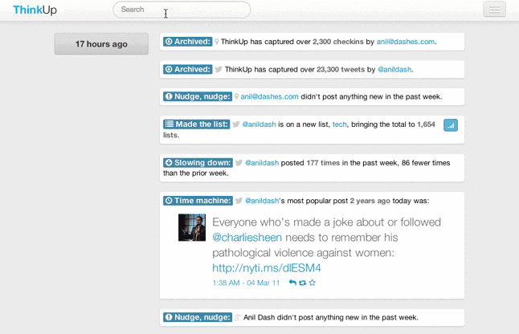

Throughout the day, ThinkUp tells you what's meaningful on your social networks.
Beyond charts and numbers, we'll tell you how your participation makes a difference on the network.
|
|
Steven Johnson 1,442,666 followers"Hyperlocal cooties and why I won't give up hope: http://t.co/81XAe6bNuO" |
|
|
Point of community pride in beta 9: over half the authors were first-timers. We <3 new community members. http://bit.ly/hdTnH3
|
|
|
President Obama to young people "No matter how great the challenges are, their idealism, their energy & their ambition always gives me hope"
|
|
|
Harvey Mudd College@harveymudd from Claremont, CA Watch Felicia Day and Wil Wheaton's new YouTube series "Tabletop" starting April 2. http://t.co/6YHqgzmr @wilw @feliciaday
|
If you want to get started now and are geeky,
download & install ThinkUp on your own web server.
Beyond charts and numbers, we'll tell you how your participation makes a difference on the network.

No matter what your goals are on Twitter, Facebook or Google+, ThinkUp can show you the progress you're making.
Most of the time though @thinkup showing me Tweets from 1 year ago cause me to say "Christ, what an asshole."
— Brett O'Connor (@negatendo) March 21, 2013
Your data belongs to you. Want to search your followers' bios, or find that old tweet? You're all set.

ThinkUp is for regular people who want to get more out of their social networks. ThinkUp helps indie artists and small businesses and educators and bloggers, from the White House to your local church to the coffee shop around the corner.
ReadWrite recognized the importance of ThinkUp even in its earliest version, and we've come a long way since then.
ThinkUp is built by a community of people like you. Many of our contributors made their first open source contribution ever on ThinkUp.